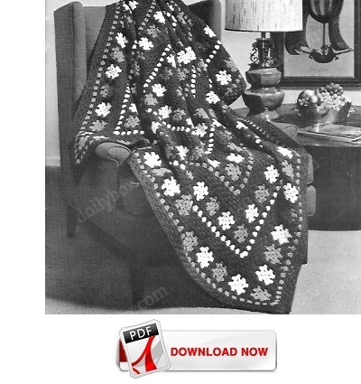

Click image for a larger view

Grandmothers Garden Free Crochet Afghan Pattern
MATERIALS:
COATS & CLARK'S RED HEART KNITTING WORSTED, 4 Ply ("Tangle-Proof" Pull-Out Skeins): 52 ounces of No. 588 Amethyst and 14 ounces each of No. 758 Mid Rose and No. 722 Lt. Pink.
Crochet Hook, Size G.
Afghan measures 57 x 77 inches each motif measures 2 1/2 inches square.
Always be sure to check your gauge before starting afghan. Use any size hook which will obtain the motif measurement above.
Afghan is worked from center to outer edge.
MOTIF (Make 107 each of Mid Rose and Lt. Pink) Starting at center, ch 5. Join with sl st to form ring.
1st rnd: Ch 3, in ring make 2 dc, ch 3 and (3 dc, ch 3) 3 times. Join with sl st to top of ch-3.
2nd rnd: Sl st in next 2 dc and in following sp, ch 3, in same sp make 2 dc, ch 3 and 3 dc; (ch 1, in next sp make 3 dc, ch 3 and dc) 3 times; ch 1. Join as before. Break off and fasten.
LAST MOTIF With Mid Rose, work as for previous Motif.
3rd rnd: Attach Amethyst to any ch-3 sp, ch 3, in same sp make 2 dc, ch 3 and 3 dc; * ch 1, 3 dc in next ch-1 sp, ch 1, in next ch-3 sp make 3 dc, ch 3 and 3 dc. Repeat from * around, ending with ch 1, 3 dc in last ch-1 sp, ch 1. Join. Break off and fasten.
CENTER STRIP Join 7 motifs as follows:
1st joining rnd: Attach Amethyst to any ch-3 sp of a Pink Motif, ch 3, 2 dc in same ch-3 sp, ch 1, sl st in any ch-3 sp of Last Motif, ch 1, 3 dc in same sp of Pink Motif, sl st in next sp of Last Motif, 3 dc in next sp of Pink Motif, sl st in next sp of Last Motif, 3 dc in next ch-3 sp of Pink Motif, ch 1, sl st in next ch-3 sp of Last Motif, ch 1, 3 dc in same sp of Pink Motif; starting at * on 3rd rnd of Last Motif, complete rnd (no more joinings).
Alternating Rose and Pink motifs, join 5 more motifs as previous 2 motifs were joined to complete Center Strip.
FIRST BORDER 1st rnd: With right side facing, attach Amethyst to right-hand ch-3 corner sp of one long edge, ch 3, in same sp make 2 dc, ch 3 and 3 dc; (ch 1, 3 dc in next ch-1 sp) twice; * ch 1, 3 dc in joining between Motifs, (ch 1, 3 dc in next ch-1 sp) twice. Repeat from * to next ch-3 sp, ch 1, in ch-3 sp make 3 dc, ch 3 and 3 dc; (ch 1, 3 dc in next ch-1 sp) twice; ch 1, in next ch-3 sp make 3 dc, ch 3 and 3 dc; complete rnd as for previous 2 sides. Join. Break off and fasten.
2nd rnd: With right side facing, attach Rose to any ch-3 corner sp, ch 3, in same sp make 2 dc, ch 3 and 3 dc; * ch 1, 3 dc in next ch-1 sp. Repeat from * to next ch-3 corner sp, ch 1, in next ch-3 sp make 3 dc, ch 3 and 3 dc; starting at *, work across remaining 3 sides. Join. Break off and fasten.
3rd rnd: With Amethyst, repeat 2nd rnd. Do not break off at end of rnd.
4th rnd: Sl st in next 2 dc and in next sp, ch 3, in same sp make 2 dc, ch 3 and 3 dc; then complete as for 3rd rnd.
5th and 6th rnds: Repeat 4th rnd. At end of 6th rnd, break off and fasten.
First Motif Band: Now join 28 motifs to last rnd of Border as follows:
1st joining rnd: Attach Amethyst to any ch-3 corner sp of a Pink Motif, ch 3, 2 dc in same sp, ch 1, sl st in any ch-3 corner sp of last row of Border, ch 1, 3 dc in same ch-3 sp of Motif; joining Motif from right to left, sl st in next ch-1 sp of Border, 3 dc in next ch-1 sp of Motif, sl st in next ch-1 sp of Border, 3 dc in next ch-3 sp of Motif, ch 1, sl st in next ch-1 sp of Border, ch 1, 3 dc in same ch-3 sp of Motif; working on Motif only, ch 1, 3 dc in next ch-1 sp, ch 1, in next ch-3 sp make 3 dc, ch 3 and 3 dc; mark last ch-3 sp made as starting sp for joining of next motif and complete as for 3rd rnd of Last Motif.
2nd joining rnd: Attach Amethyst to any ch-3 sp of a Rose Motif, ch 3, 2 dc in same sp, ch 1, sl st in the marked ch-3 sp of previous Motif, ch 1, 3 dc in same ch-3 sp of Rose Motif, sl st in next ch-1 sp of previous Motif, 3 dc in next ch-1 sp of Rose Motif, sl st in next ch-1 sp of previous Motif, 3 dc in ch-3 sp of Rose Motif, ch 1, sl st in last joining of Border, ch 1, 3 dc in same sp of Rose Motif, sl st in next ch-1 sp of Border, 3 dc in next ch-1 sp of Rose Motif, sl st in next ch-1 sp of Border, 3 dc in next ch-3 sp of Rose Motif, ch 1, sl st in next ch-1 sp of Border, ch 1, 3 dc in same sp of Rose Motif; working on Motif only, ch 1 and complete rnd as before. Working across to next cor-ner sp of Border, join motifs as previous motif was joined, alternating colors of motifs.
CORNER MOTIF Attach Amethyst to any ch-3 corner sp of a Rose Motif, ch 3, 2 dc in same sp, ch 1, sl st in the marked ch-3 sp of previous Motif, ch 1, 3 dc in same ch-3 sp of Rose Motif, sl st in next ch-1 sp of previous Motif, 3 dc in next ch-1 sp of Rose Motif, sl st in next ch-1 sp of previous Motif, 3 dc in next ch-3 sp of Rose Motif, ch 1, sl st in last joining of Border, ch 1, 3 dc in same sp of Rose Motif; working on Motif only, complete rnd as for 3rd rnd of Last Motif. Starting with a Lt. Pink Motif, work across remaining 3 sides as before, joining last Corner Motif to previous and First Motifs.
SECOND BORDER 1st rnd: With right side facing, attach Amethyst to right-hand ch-3 corner sp of one long edge of last rnd of previous Motif Band, ch 3, in same sp make 2 dc, ch 3 and 3 dc; * (ch 1, 3 dc in next ch-1 sp) twice; ** ch 1, 3 dc in joining between Motifs,
skip next 3 dc, (ch 1, 3 dc in next ch-1 sp) twice. Repeat from ** across to next ch-3 corner sp, ch 1, in ch-3 sp make 3 dc, ch 3 and 3 dc. Repeat from * around. Join. Break off and fasten.
2nd rnd: With Pink, repeat 2nd rnd of First Border.
Next 4 rnds: Repeat 3rd through 6th rnds of First Border.
Second Motif Band: Joining 44 motifs, work as for First Motif Band.
THIRD BORDER Work as for Second Border, using Mid Rose instead of Lt. Pink on 2nd rnd.
Third Motif Band: Joining 60 motifs, work as for First Motif Band.
FOURTH BORDER Repeat Second Border.
Fourth Motif Band: Joining 76 motifs, work as for First Motif Band.
FIFTH BORDER Repeat Third Border. Block to measurements.
Home